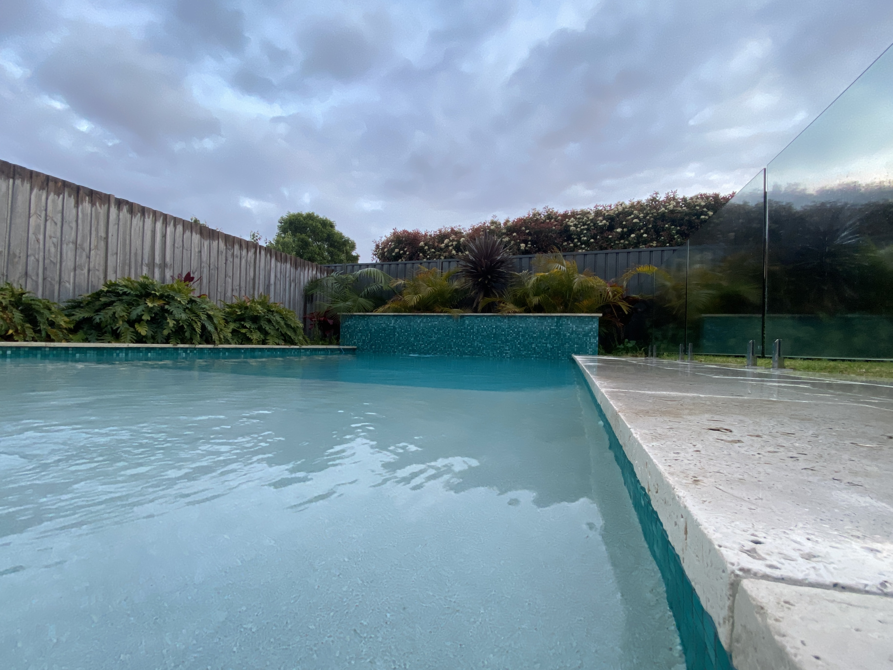

A Short Ethnography
Click play button to play audio
5:30am
I am up before the sun. Its first rays reach up over the hill to the East of my house, stretching out timidly like I do when I first get out of bed. I open the sliding door to the garden and step out onto the tiles. The night has taken away any warmth they may have embraced from yesterday’s sunlight. In the few steps from the door to the garden shower I am at my most vulnerable, completely bare but for the hair on my head. Eight degrees celsius. The air is cruel but fair to every cell of my skin that faces it, and momentarily distracts me with its bite while I try to focus my mind on the task ahead. My swim shorts hang from the shower tap, and as I put them on I thank whoever looks after the rains at night on this country that they are still dry. Cold enough compared to my pyjamas, but still dry.
5:40am
Reflections of grey and blue dawn dance in the reflection of the water. The glass pool fence hides the water from clear sight, its own relationship with water taking shape and form before my very eyes. Ordinarily crystal clear, at this hour of the day the glass is ghostly opaque, frosty condensation clinging to its skin, masking its true form. Tiny droplets scatter as I grab the top of the gate, breaking their freezing solitude. As I step through, the soles of my feet immediately long for the grace of the patio tiles they just left. Almost icy, the path around the pool is another of the many reminders of why I am so reluctant to conduct this ritual each morning. I have become accustomed to not listening to the small voice of reason within my head which tells me it isn’t too late to go back to bed. I step down off the ledge and brace for the unforgiving touch of the water. My feet are now acclimated thanks to the tiles, and it's not until my thighs and torso meet the blue body that I am truly confronted by the cold. This is the moment of no return. This is what I have set out to do. I close my eyes and sink my head into the pool, the cold pressing my face with a force as if I were ten times deeper.
5:45am
In the shade of the East hill, the sound of my sharp inhalation is distinct. Around me, conversations are interrupted. Conversations I am now privy to. After a moment of both inner and outer silence, the miner birds return to their fierce squabbling, or perhaps excited chit chat. I will need a few more mornings out in the cold to really know the difference. Sitting atop the TV antenna above my house like a weather vane, a lone magpie curiously watches me. She tilts her head back and gently sings out to the wind, the harmony carrying across the Trumanesque row of suburban roofs. A few more of her tribe fly in to perch on the fence next to the pool. As they whisper amongst themselves, rather ironically I realise it is me who is the animal behind the pool fenced glass. This is where I live, but it is not my home. It is not my family’s home nor where I grew up, and it is certainly not a place I have truly connected with yet.
5:50am
Hues of pink peer over the precipices of the tall clouds in the west. I fight the urge to shiver by taking slow measured breaths through my nose. My hairs stand to attention at every place on my body, my skin itself feels almost translucent. The idea that this membrane separates me from the world, from the other-than-human, is washed away by the pool immersion. Cold, in its raw brutality, seeps past this so-called protective layer and into my muscles and bones. I feel it in my lungs, I taste it on my lips, I hear it in my breath and heartbeat. Overcoming this bodily assault is inherently rewarding, like reaching atop a mountain or discovering an unknown path to your house. But it is only so rewarding in the sense that I have chosen this brutality. I cannot help but empathise with the weeds that have struggled through the cracks of the pool tiles only to face this stark reality each night. I feel the way the stone pulls at the warmth in my soles. In spite of this harshness however, there is beauty in the struggle of these non-human entities against the cold, for cold is simply the absence of energy, of life.
